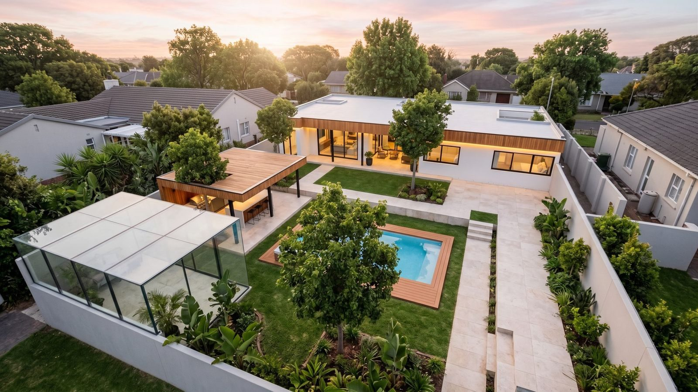
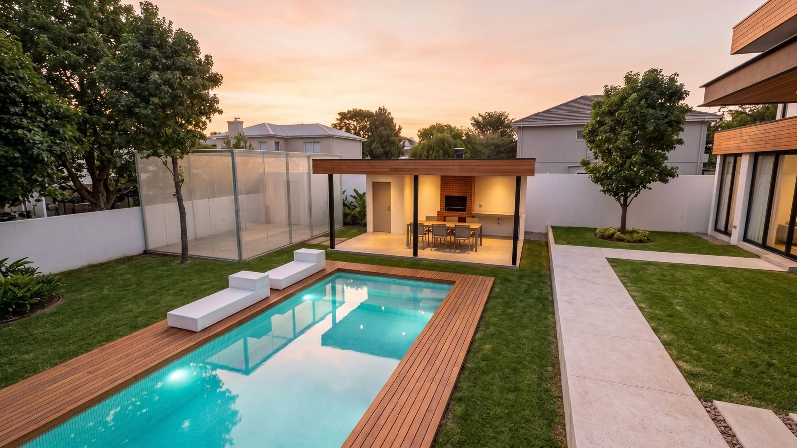
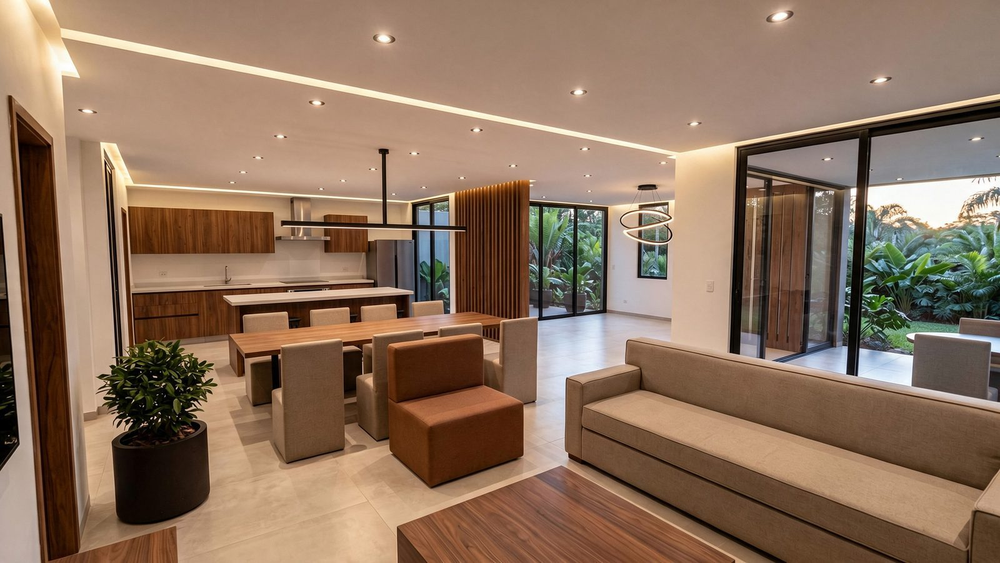

El soporte técnico de tu obra.O suporte técnico da sua obra.
Del terreno a la llave, con la constructora que elijas.Do terreno à chave, com a construtora que você escolher.
Proyecto, ingeniería y servicios técnicos para inversores, estudios de arquitectura y constructoras en Alto Paraná: naves, maquilas, oficinas y viviendas.Projeto, engenharia e serviços técnicos para investidores, escritórios de arquitetura e construtoras no Alto Paraná: galpões, maquiladoras, escritórios e residências.



Todo lo técnico que una obra necesita, en un solo lugar.Tudo o que uma obra precisa na parte técnica, num só lugar.
Un mismo equipo coordina el terreno, el proyecto, el cálculo y la obra, así la información no se pierde entre profesionales.Uma mesma equipe coordena o terreno, o projeto, o cálculo e a obra, para que a informação não se perca entre profissionais.
Arquitectura y proyectoArquitetura e projeto
Proyecto y documentación de obra.Projeto e documentação de obra.
IngenieríaEngenharia
Instalaciones y soluciones técnicas para tu obra.Instalações e soluções técnicas para a sua obra.
Cálculo estructuralCálculo estrutural
Hormigón armado y acero, con planos de despiece.Concreto armado e aço, com plantas de armação.
Dirección y gestión de obraDireção e gestão de obra
Seguimiento técnico con la constructora que elijas.Acompanhamento técnico com a construtora que você escolher.
Estudio de suelosSondagem de solo
Caracterización del terreno para definir la fundación.Caracterização do terreno para definir a fundação.
AgrimensuraAgrimensura e topografia
Relevamientos, mensuras y replanteo.Levantamentos, medições e locação de obra.
Modelado BIM (Revit)Modelagem BIM (Revit)
Ves tu obra en 3D antes de construirla, con cómputos.Veja a obra em 3D antes de construir, com quantitativos.
PaisajismoPaisagismo
Diseño de patios, jardines y espacios exteriores.Projeto de pátios, jardins e áreas externas.
Diseño de interioresDesign de interiores
Ambientes resueltos al detalle.Ambientes resolvidos nos detalhes.
Cómputo y materialesOrçamento e materiais
Cálculo de materiales y provisión para la obra.Cálculo e fornecimento de materiais.
Seguridad e higieneSegurança do trabalho
Técnicos de seguridad e higiene para la obra.Técnicos de segurança do trabalho na obra.
Gestión inmobiliariaGestão imobiliária
Venta o alquiler cuando la obra está lista.Venda ou locação quando a obra estiver pronta.
Cuatro pasos, un solo interlocutor técnico.Quatro etapas, um único interlocutor técnico.
TerrenoTerreno
Agrimensura y estudio de suelos para saber qué y cómo se puede construir.Agrimensura e sondagem para saber o que e como construir.
ProyectoProjeto
Arquitectura, ingeniería y modelo BIM: ves tu obra antes de construirla.Arquitetura, engenharia e BIM: veja a obra antes de construí-la.
ObraObra
Dirección de obra, seguridad e higiene y materiales, con la constructora que elijas.Direção de obra, segurança e materiais, com a construtora que você escolher.
EntregaEntrega
Llave en mano y, si querés, gestionamos la venta o el alquiler.Chave na mão e, se quiser, cuidamos da venda ou locação.
Tu equipo técnico tercerizado.A sua equipe técnica terceirizada.
Sumanos por pedido cuando tu obra lo necesite, sin cargar estructura fija. Entregamos bajo tu marca y en tus plazos.Conte conosco sob demanda quando a sua obra precisar, sem estrutura fixa. Entregamos com a sua marca e nos seus prazos.
Lo que venimos haciendo.O que estamos fazendo.
Proyectos de arquitectura y estructuras que desarrollamos para nuestros clientes.Projetos de arquitetura e estruturas desenvolvidos para nossos clientes.
Novedades de CIPRODEC y del sector.Novidades da CIPRODEC e do setor.
Cargando noticias…
Carregando notícias…
InmobiliariaImobiliária
Propiedades en venta y alquiler.Imóveis à venda e para alugar.
NoticiasNotícias
Novedades de obras, normativa y del sector.Novidades de obras, normas e do setor.
Precios de referenciaPreços de referência
Revista mensual de mano de obra y materiales en PY, AR y BR, con fuentes.Revista mensal de mão de obra e materiais no PY, AR e BR, com fontes.
CIPRODEC Radio
Escuchá nuestra radio en vivo.Ouça nossa rádio ao vivo.
Contanos qué vas a construir.Conte o que você vai construir.
Te respondemos por WhatsApp y coordinamos una reunión de 30 minutos para ver tu caso.Respondemos pelo WhatsApp e marcamos uma reunião de 30 minutos para ver o seu caso.